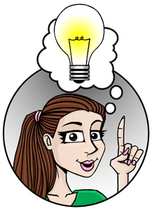

Che bello! Hai un’idea brillante anche tu? 
Why don’t you organise something similar for you and your friends? Ma dove incomcio? È ovvio … con le domande!
Complete all the writing exercises in worksheet_A3.11. Hai bisogno di aiuto? Revisit Piccolo Fratello! the TV show in Attività 10 for ideas.
I tuoi commenti
How did you cope with this activity?
Cosa hai trovato facile?
Cosa hai trovato difficile?
What strategies did you use to help you?
Ti è piaciuta questa attività?
Vuoi fare qualcosa di più?
Print out your commenti here if you like.
If you enjoyed this activity, go to Extra – Personaggi section for più divertimento.